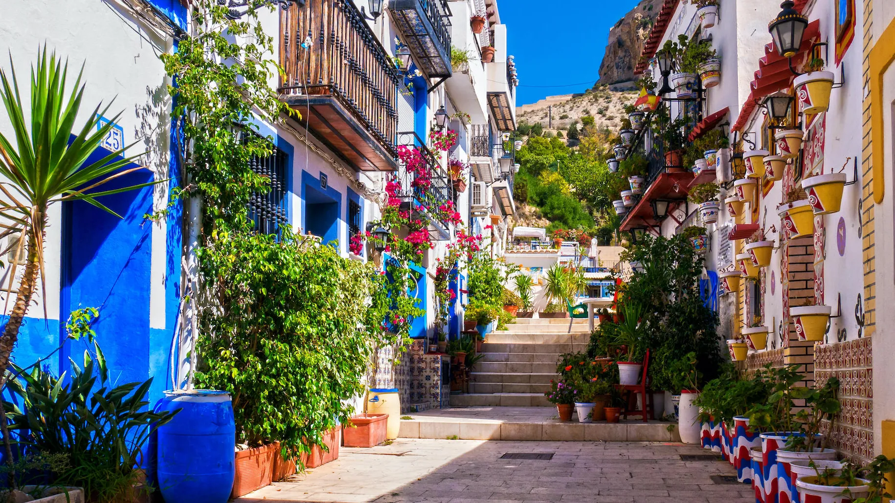
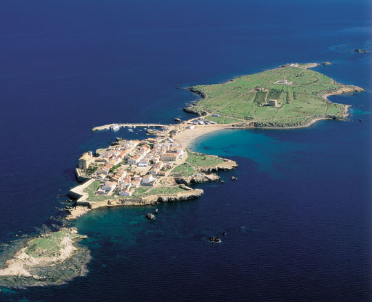

Alicante Ciudad
Alicante Ciudad
- Barrio de Santa Cruz.
- Explanada de España.
- Calle de las setas.
- Castillo de Santa Barbara (al atardecer).
- Playa del Postiguet.
De tapas…
La Taberna del Gourmet(c/ San Fernando, 10).
Tapas de la mejor calidad en una auténtica barra alicantina;
Bar-Cerveceria Gravina 4 (c/ Gravina, 4).
- 30 años de tradición.
La Barrita de Santa María (Plaza de Sta. María, 2).
- Tapas bien trabajadas justo frente a la portada de la Basílica de Santa María.
La Taberna Ibérica (c/ Pedro Sebastià, 7).
- Una gran variedad de tapas, entre las que destacan embutidos, quesos curados… y también arroces y carnes.
La buena mesa…
San Telmo Gastrobar (c/ San Nicolás, 14).
- Cocina mediterránea.A espaldas de la Concatedral.
Sotaterra by TheLoft (c/ Lonja de los Caballeros, 10).
-Cocina alicantina, española, vinos y productos artesanos; tradicional pero no convencional.
La Tasca del Barrio (c/ Labradores, 22).
- Cocina mediterránea, tapas y arroces en un ambiente acogedor.Los postres y el servicio también son su fuerte.
Las Brasas de San Miguel (c/ San José, 5).
- Chuletón, secreto de cerdo, churrasco… carne a la brasa y sabores típicos alicantinos acompañados de cerveza de barril.

Altea y Guadalest

Playa de San Juan
Altea
Que hacer:
- Tirarnos en la playa a descansar.
- Alquilar una bici para recorrer el paseo maritimo.
- Seguir tirados en la Arena.
- Tomar tintos de verano.
- Atardecer en la playa de la Almadraba
- Paseo desde playa de San Juan hasta el Cabo de Huertas pasando por el faro.
- Playa Albufereta (antiguos viveros romanos que ahora son piscinas naturales)
Comer y beber
- Comernos un buen arroz en el paseo maritimo.
- Avenida Costa Blanca zona de fiesta y de bares

Isla de Tabarca
Isla de Tabarca
La mejor opcion es ir desde Santa Pola, se puede ir en:
- Lancha rapida (se tardan 15 minutos)
- Catamarán con vision submarina (se tardan 25 minutos)
Cositas que hacer
- Hacer snorkel: el fondo marino de allí es ¡espectacular! así que llévate gafas y tubo para hacer
snorkel.
- Ver la Iglesia de San Pedro y San Pablo.
- Ver las cuevas de Llop Marí: es el mejor sitio para hacer snorkel.
- Callejear por el centro del pueblo
Donde comer
El plato tipico de Tabarca es el caldero, una especie de arroz caldoso con un pescado llamado gallina.
- Restaurante Don Jeronimo, el mejor caldero de la isla
- Tambien hay otros restaurantes en la zona de la playa, otro bueno es "La Caleta"

Playitas, Calitas y otras Cositas
Playitas, Calitas y otras Cositasa
Playas y calas
- "Cala del Portixol" (parece mykonos).
- "Cala granadella" se puede coger un kayak para una excursion de 3 horas e ir a la "Cala Encaló".
- "Cala del Tio Ximo" (benidorm)
- "Fuentes del Algar".
- "Cala de la Fustera"
- "Playa de la Fossa"
- "Cala del portet"
- "Cala del Penyal"
Otras cositas
- ¿Benidorm?.
- Elche, pasar cuando vayamos a Tabarca.
- Dinopark (cerca de las "fuentes del algar")